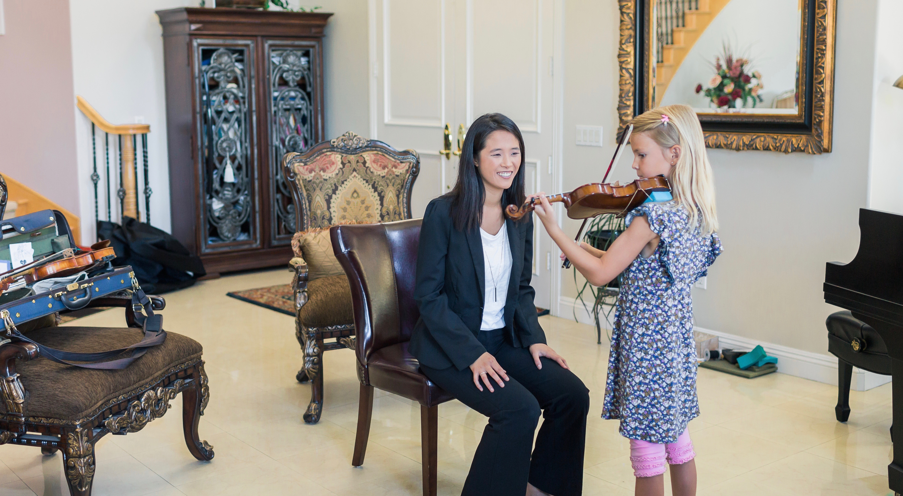
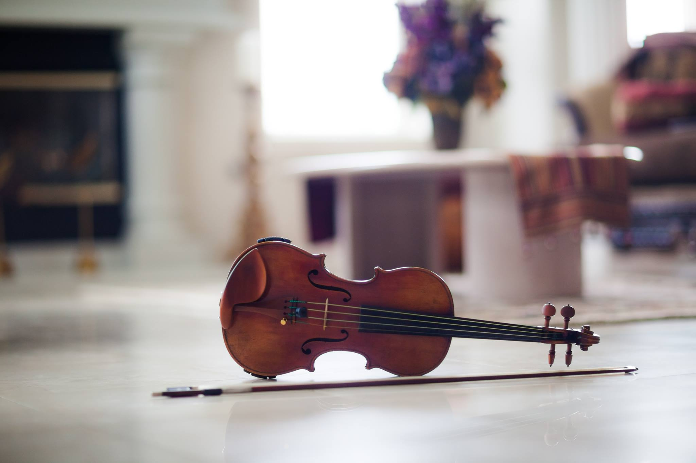

STUDENT OPPORTUNITIES
Students in my studio are enrolled in weekly private lessons in which they will study their instrument through use of suzuki repertoire, technique, and general music theory knowledge. In addition, students are required to attend weekly group classes to further develop solo performance, group performance, technique, practicing skills, and participate in games and activities with other students. Students are also expected to perform twice a year in studio recitals where they can also benefit from the performances of their peers. If you are considering joining my studio, remember I offer a free trial lesson.
WEEKLY LESSONS
Private instruction in music is highly individualized and can be tailored to fit the individual needs of the student. Though many schools offer music instruction, teachers’ time with their students is highly limited. In a private lesson, the student has my full time and attention every week for a set amount of time. Students who study privately make more progress and are generally more satisfied in their music study than those who only study it in school because they can focus more on proper technique and holistic learning than their colleagues who only learn in a class setting. Additionally, through private instruction students have the opportunity to be individually mentored by me. Sign up for a free trial lesson today !
GROUP CLASSES

Students in my studio are required to participate in supplementary group classes that meet each week. Each group class is divided into two sections: theory time and ensemble time. Theory time will include ear training, rhythmic training, music theory, and music history without the violin. Ensemble time will include learning to begin & end together, playing in tune together, cueing, following, and generally thinking on your toes while playing. Some of the countless benefits of group class include allowing students to thrive socially and musically.
BI-ANNUAL RECITALS

Every semester, my students perform in a recital. Recitals are an exciting time for students to get to show off their hard work. After each recital, the kids are rewarded with a potluck party to celebrate their hard work. I know from experience that performance opportunities are the highlight of musical study. It is a joy for all students to be able to perform and see their hard work come to fruition.
PARENT EDUCATION
Parent education is something that I am passionate about. Because I believe that parents are my greatest allies in the violin journey, I offer many forms of parent education. All families who are new to the violin are required to sign up for 3 forty-five minute parent education lessons with me. These parent education sessions are strictly between the teacher and the practice parent and occur before the child starts his/her first lesson. In these lessons, we will cover bowhold technique, Suzuki methodology, practice techniques, lesson etiquette, and much more.
Additionally, I occasionally hold private parent-teacher conferences to check in on how the students are doing during home practice. These meetings allow me to brainstorm with parents on how to meet their child’s individual practice needs.
On top of these resources, I have partnered with a fellow violin teacher, Amanda Sansonetti to offer continuing parent education. While students are in violin group class, parents will occasionally meet with a violin teacher (whoever is not teaching the group class that day) and discuss a violin topic (helping students practice or helping them perform). Our goal with these continuing parent education classes is to provide community and education to parents.